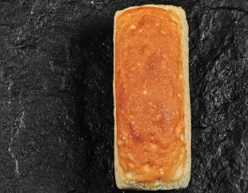
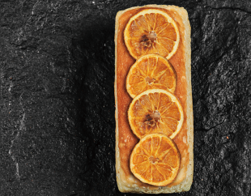
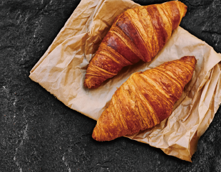
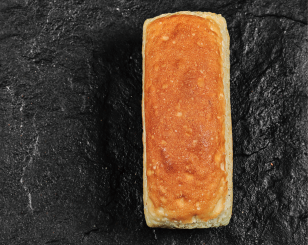
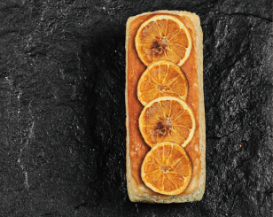
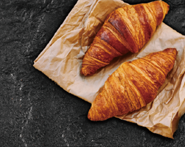
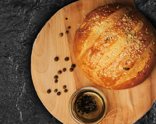
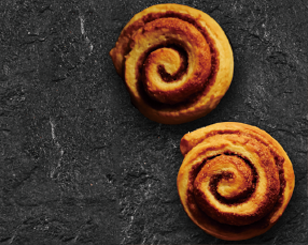
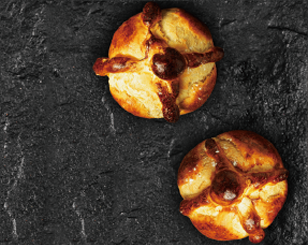

MENU
今月の売れ筋RANKING

TokyoBrick

季節のBrick

クロワッサン
LINE UP

■TokyoBrick
しっとりとした食感と、
やさしい甘みが広がる
当店の看板メニューです。

■季節のBrick
季節ごとに異なる
フレーバーのBrickを
ご用意しています。
6月は、レモンのコンフィを
トッピングした、初夏に
ぴったりの味わいです。

■クロワッサン
外はサクッと、
中はふんわり焼き上げた
定番の一品。

■フォカッチャ
オリーブオイルの
香りが広がる、
もちっと食感のパン。

■シナモンロール
やさしい甘さと
シナモンの香りを
楽しめる人気のパン。

■くるみパン
香ばしいくるみを
練りこんだ、素朴な
味わいのパン。